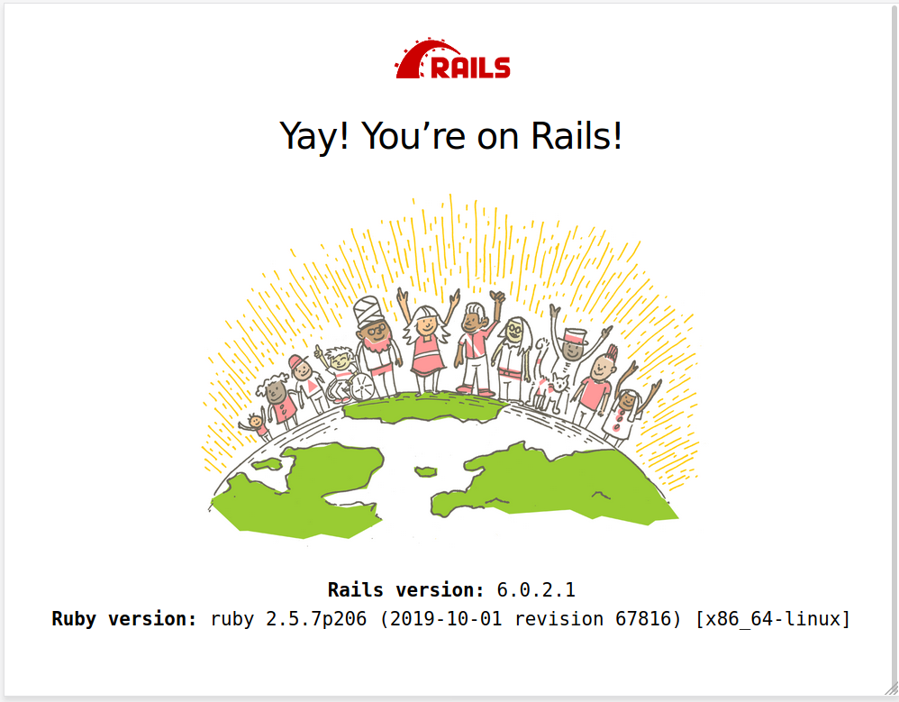

Version 5.2.6 · März 2020
Abstract
Ruby on Rails (kurz: Rails) ist ein Framework zum Entwickeln von Webanwendungen.
Die folgenden Schritte stellen die Funktionsfähigkeit der Installation von Ruby und Ruby on Rails sicher.
Ruby on Rails ist Open Source, wird gehostet auf GitHub und ist freigegeben unter der MIT-Lizenz.
Der Artikel ist in AsciiDoc geschrieben und mit Asciidoctor 2.0.10 erstellt worden.
|
|
Zu beachten ist, dass so ein Dokument zum Einen nie abschließend
sein kann, und zum Anderen bestimmte Konfigurationen anders, oder
auf einem anderem Weg durchgeführt werden können. Es gilt wie immer: Verwendung der Anleitung auf eigene Gefahr. |
Vorraussetzung
Die Installation wird für Ubuntu 18.04 LTS (Bionic Beaver) beschrieben.
Gleichwohl sind die einzelnen Schritte auch für
andere Debian-basierte GNU/Linux Distributionen übertragbar.
Die Installation von Ruby ist, wie in IiU — Ruby MRI 2.5 beschrieben, durchgeführt worden.
|
|
Die hier aufgeführten Schritte werden beispielhaft für Ruby 2.5.7 ausgeführt. Gelten aber, auch in dieser Reihenfolge, ebenfalls für die Ruby-Versionen >= 2.2. Eine Installation von Ruby on Rails 6.0 ist nur mit Ruby-Versionen >= 2.2 möglich! |
Ruby 2.3.7
$ chrubyruby-2.5.7 $ chruby ruby-2.5.7 $ which ruby /opt/rubies/ruby-2.5.7/bin/ruby $ ruby -v ruby 2.5.7p206 (2019-10-01 revision 67816) [x86_64-linux] $ gem -v 2.7.6.2 $ rake -V rake, version 12.3.0
| Für die Verwaltung der Ruby-Installationen verwende ich Chruby. |
RubyGems: Installation
Mit gem install … wird in der Regel auch Dokumentation installiert.
Für Rails wird in der Regel die offizielle Dokumentation im Internet genutzt:
→ Ruby on Rails Guides (v6.0.2.1)
Mit der folgenden Datei kann der Installationsschritt ausgelassen werden.
~/.gemrc#install: --no-document #update: --no-document gem: --no-document
|
|
Für die Ruby-Systeminstallation muß mit dem Benutzer root
die Datei |
|
|
Die Optionen für das Programm-Aufruf gem install … --no-ri --no-rdoc sind deprecated. |
RubyGem: rails-6.0.2.1
$ gem search ^rails$ --remote *** REMOTE GEMS *** rails (6.0.2.1)
| Seit dem 18.12.2019 ist das die neueste Version des RubyGem rails. |
|
|
Das RubyGem rails kann unterschiedlich installiert werden:
$ gem install rails
|
Mit gem install … werden auch alle Abhängigkeiten zu anderen RubyGems aufgelöst.
$ gem install rails --version '~> 6.0.0' Fetching: i18n-1.8.2.gem (100%) HEADS UP! i18n 1.1 changed fallbacks to exclude default locale. But that may break your application. If you are upgrading your Rails application from an older version of Rails: Please check your Rails app for 'config.i18n.fallbacks = true'. If you're using I18n (>= 1.1.0) and Rails (< 5.2.2), this should be 'config.i18n.fallbacks = [I18n.default_locale]'. If not, fallbacks will be broken in your app by I18n 1.1.x. If you are starting a NEW Rails application, you can ignore this notice. For more info see: https://github.com/svenfuchs/i18n/releases/tag/v1.1.0 Successfully installed i18n-1.8.2 Fetching: tzinfo-1.2.6.gem (100%) Successfully installed tzinfo-1.2.6 Fetching: zeitwerk-2.3.0.gem (100%) Successfully installed zeitwerk-2.3.0 Fetching: activesupport-6.0.2.1.gem (100%) Successfully installed activesupport-6.0.2.1 Fetching: rack-test-1.1.0.gem (100%) Successfully installed rack-test-1.1.0 Fetching: mini_portile2-2.4.0.gem (100%) Successfully installed mini_portile2-2.4.0 Fetching: nokogiri-1.10.9.gem (100%) Building native extensions. This could take a while... Successfully installed nokogiri-1.10.9 Fetching: crass-1.0.6.gem (100%) Successfully installed crass-1.0.6 Fetching: loofah-2.4.0.gem (100%) Successfully installed loofah-2.4.0 Fetching: rails-html-sanitizer-1.3.0.gem (100%) Successfully installed rails-html-sanitizer-1.3.0 Fetching: rails-dom-testing-2.0.3.gem (100%) Successfully installed rails-dom-testing-2.0.3 Fetching: builder-3.2.4.gem (100%) Successfully installed builder-3.2.4 Fetching: erubi-1.9.0.gem (100%) Successfully installed erubi-1.9.0 Fetching: actionview-6.0.2.1.gem (100%) Successfully installed actionview-6.0.2.1 Fetching: actionpack-6.0.2.1.gem (100%) Successfully installed actionpack-6.0.2.1 Fetching: activemodel-6.0.2.1.gem (100%) Successfully installed activemodel-6.0.2.1 Fetching: activerecord-6.0.2.1.gem (100%) Successfully installed activerecord-6.0.2.1 Fetching: globalid-0.4.2.gem (100%) Successfully installed globalid-0.4.2 Fetching: activejob-6.0.2.1.gem (100%) Successfully installed activejob-6.0.2.1 Fetching: mini_mime-1.0.2.gem (100%) Successfully installed mini_mime-1.0.2 Fetching: mail-2.7.1.gem (100%) Successfully installed mail-2.7.1 Fetching: actionmailer-6.0.2.1.gem (100%) Successfully installed actionmailer-6.0.2.1 Fetching: nio4r-2.5.2.gem (100%) Building native extensions. This could take a while... Successfully installed nio4r-2.5.2 Fetching: websocket-extensions-0.1.4.gem (100%) Successfully installed websocket-extensions-0.1.4 Fetching: websocket-driver-0.7.1.gem (100%) Building native extensions. This could take a while... Successfully installed websocket-driver-0.7.1 Fetching: actioncable-6.0.2.1.gem (100%) Successfully installed actioncable-6.0.2.1 Fetching: mimemagic-0.3.4.gem (100%) Successfully installed mimemagic-0.3.4 Fetching: marcel-0.3.3.gem (100%) Successfully installed marcel-0.3.3 Fetching: activestorage-6.0.2.1.gem (100%) Successfully installed activestorage-6.0.2.1 Fetching: actionmailbox-6.0.2.1.gem (100%) Successfully installed actionmailbox-6.0.2.1 Fetching: actiontext-6.0.2.1.gem (100%) Successfully installed actiontext-6.0.2.1 Fetching: thor-1.0.1.gem (100%) Successfully installed thor-1.0.1 Fetching: railties-6.0.2.1.gem (100%) Successfully installed railties-6.0.2.1 Fetching: bundler-2.1.4.gem (100%) Successfully installed bundler-2.1.4 Fetching: sprockets-4.0.0.gem (100%) Successfully installed sprockets-4.0.0 Fetching: sprockets-rails-3.2.1.gem (100%) Successfully installed sprockets-rails-3.2.1 Fetching: rails-6.0.2.1.gem (100%) Successfully installed rails-6.0.2.1 37 gems installed
| Mit dem RubyGem rails-6.0.2.1 wurden insgesamt 37 Gems installiert. Hinweis: Weitere RubyGems müssen für das Framework Ruby on Rails installiert werden. |
Ruby on Rails 6.0.2.1
Die notwendigen Schritte werden auf der Kommandozeile durchgeführt.
-
Datenbanksystem wählen
-
Datenbankadapter installieren
-
Datenbank erstellen
-
Projektverzeichnis erstellen
-
RubyGems installieren
-
Datenbankadapter konfigurieren
-
JavaScript-Runtime installieren
-
Aufruf der Webanwendung im Browser
Datenbanksystem wählen
Für das Framework Ruby on Rails sind die folgenden drei Datenbanksysteme zumindest für die Entwicklung (aber auch für die Produktion) eines neuen Rails-Projektes die erste Wahl:
-
SqLite3
Klein, kompakt und dateibasiert — mit diesen Vorzügen glänzt 'SQLite3'.
Ist in Ruby on Rails die Default-Datenbank. -
MySQL
Gut und schnell und überhaupt … überall verfügbar. -
PostgreSQL
Lupenreine OpenSource-Datenbanksystem für professionelle Anforderungen.
|
|
Die einzelnen Schritte für die Datenbank PostgreSQL werden
in diesem Artikel nicht beschrieben. |
Datenbankadapter installieren
$ gem install mysql2 Fetching: mysql2-0.5.3.gem (100%) Building native extensions. This could take a while... Successfully installed mysql2-0.5.3 1 gem installed
$ gem install sqlite3 Fetching: sqlite3-1.4.2.gem (100%) Building native extensions. This could take a while... Successfully installed sqlite3-1.4.2 1 gem installed
$ gem list --local | grep 'activerecord\|mysql\|sqlite3' activerecord (6.0.2.1) mysql2 (0.5.3) sqlite3 (1.4.2)
Datenbank erstellen
SQLite3 ist eine Programmbibliothek, die ein relationales Datenbanksystem enthält. Das bedeutet, der notwendige Aufwand an Administration für ein Datenbanksystem, sowie für das Anlegen von Benutzern, einer Datenbank und dem Zuweisen von Rechten entfällt.
MySQL hat für die Administration des Datenbanksystems verschiedene Programm-Angebote, unter anderem phpMyAdmin … aber eben auch die Kommandozeile.
$ mysql -uroot -p
Enter password:
Welcome to the MySQL monitor. Commands end with ; or \g.
Your MySQL connection id is 15
Server version: 5.7.29-0ubuntu0.18.04.1 (Ubuntu)
Copyright (c) 2000, 2020, Oracle and/or its affiliates. All rights reserved.
Oracle is a registered trademark of Oracle Corporation and/or its
affiliates. Other names may be trademarks of their respective
owners.
Type 'help;' or '\h' for help. Type '\c' to clear the current input statement.
mysql> GRANT ALL PRIVILEGES ON *.* TO 'sid'@'localhost'
-> IDENTIFIED BY 'g3h3im';
Query OK, 0 rows affected, 1 warning (0.00 sec)
mysql> flush privileges;
Query OK, 0 rows affected (0.00 sec)
mysql> exit
Bye
$ mysql -usid -p Enter password: Welcome to the MySQL monitor. Commands end with ; or \g. Your MySQL connection id is 16 Server version: 5.7.29-0ubuntu0.18.04.1 (Ubuntu) Copyright (c) 2000, 2020, Oracle and/or its affiliates. All rights reserved. Oracle is a registered trademark of Oracle Corporation and/or its affiliates. Other names may be trademarks of their respective owners. Type 'help;' or '\h' for help. Type '\c' to clear the current input statement. mysql> CREATE DATABASE myapp_development; Query OK, 1 row affected (0.00 sec) mysql> exit Bye
Projektverzeichnis erstellen
$ cd $ mkdir RailsDir $ cd RailsDir $ rails _6.0.2.1_ new MyApp --database=mysql -B
create create README.md create Rakefile create .ruby-version create config.ru create .gitignore create Gemfile
run git init from "." Leeres Git-Repository in /yard/80/RailsDir/MyApp/.git/ initialisiert create package.json create app create app/assets/config/manifest.js create app/assets/stylesheets/application.css create app/channels/application_cable/channel.rb create app/channels/application_cable/connection.rb create app/controllers/application_controller.rb create app/helpers/application_helper.rb create app/javascript/channels/consumer.js create app/javascript/channels/index.js create app/javascript/packs/application.js create app/jobs/application_job.rb create app/mailers/application_mailer.rb create app/models/application_record.rb create app/views/layouts/application.html.erb create app/views/layouts/mailer.html.erb create app/views/layouts/mailer.text.erb create app/assets/images/.keep create app/controllers/concerns/.keep create app/models/concerns/.keep create bin create bin/rails create bin/rake create bin/setup create bin/yarn create config create config/routes.rb create config/application.rb create config/environment.rb create config/cable.yml create config/puma.rb
create config/spring.rb create config/storage.yml create config/environments create config/environments/development.rb create config/environments/production.rb create config/environments/test.rb create config/initializers create config/initializers/application_controller_renderer.rb create config/initializers/assets.rb create config/initializers/backtrace_silencers.rb create config/initializers/content_security_policy.rb create config/initializers/cookies_serializer.rb create config/initializers/cors.rb
create config/initializers/filter_parameter_logging.rb create config/initializers/inflections.rb create config/initializers/mime_types.rb create config/initializers/new_framework_defaults_6_0.rb
| _6.0.2.1_ — Festlegen, welche Rails-Version verwendet werden soll. --database=mysql — Festlegen, welches DBMS verwendet werden soll. |
|
| Für das Datenbanksystem SQLite3 verkürzt sich der Aufruf: rails _6.0.2.1_ new myapp |
|
| -B Don’t run bundle install Kein automatisches 'install' und 'update' von RubyGems! |
|
| Die zu diesem Zeitpunkt benötigten RubyGems und deren Abhängigkeiten untereinander entnehmen Sie der Datei Gemfile. |
|
| Konfigurationsdatei für den neuen HTTP-Server Puma (ersetzt WEBrick). | |
| Konfigurationsdatei mit den Einstellungen für den Datenbankzugriff (Datenbankadapter). |
$ cd MyApp $ tree -LF 2 . . ├── app/ │ ├── assets/ │ ├── channels/ │ ├── controllers/ │ ├── helpers/ │ ├── javascript/ │ ├── jobs/ │ ├── mailers/ │ ├── models/ │ └── views/ ├── bin/ │ ├── rails* │ ├── rake* │ ├── setup* │ └── yarn* ├── config/ │ ├── application.rb │ ├── boot.rb │ ├── cable.yml │ ├── credentials.yml.enc │ ├── database.yml
Datei: config/database.yml |
|
Datei: Gemfile |
RubyGems installieren
Gemfile genannten Abhängigkeiten$ bundle check Bundler can't satisfy your Gemfile's dependencies. Install missing gems with `bundle install`. $ bundle list
| Der User muß die fehlenden Gems installieren |
$ ls -l Gemfile* -rw-r--r-- 1 sid medien 1975 Mär 6 19:52 Gemfile
Gemfilesource 'https://rubygems.org'
git_source(:github) { |repo| "https://github.com/#{repo}.git" }
ruby '2.5.7'
# Bundle edge Rails instead: gem 'rails', github: 'rails/rails'
gem 'rails', '~> 6.0.2', '>= 6.0.2.1'
# Use mysql as the database for Active Record
gem 'mysql2', '>= 0.4.4'
# Use Puma as the app server
gem 'puma', '~> 4.1'
# Use SCSS for stylesheets
gem 'sass-rails', '>= 6'
# Transpile app-like JavaScript. Read more: https://github.com/rails/webpacker
gem 'webpacker', '~> 4.0'
# Turbolinks makes navigating your web application faster. Read more: https://github.com/turbolinks/turbolinks
gem 'turbolinks', '~> 5'
# Build JSON APIs with ease. Read more: https://github.com/rails/jbuilder
gem 'jbuilder', '~> 2.7'
# Use Redis adapter to run Action Cable in production
# gem 'redis', '~> 4.0'
# Use Active Model has_secure_password
# gem 'bcrypt', '~> 3.1.7'
# Use Active Storage variant
# gem 'image_processing', '~> 1.2'
# Reduces boot times through caching; required in config/boot.rb
gem 'bootsnap', '>= 1.4.2', require: false
group :development, :test do
# Call 'byebug' anywhere in the code to stop execution and get a debugger console
gem 'byebug', platforms: [:mri, :mingw, :x64_mingw]
end
group :development do
# Access an interactive console on exception pages or by calling 'console' anywhere in the code.
gem 'web-console', '>= 3.3.0'
gem 'listen', '>= 3.0.5', '< 3.2'
# Spring speeds up development by keeping your application running in the background. Read more: https://github.com/rails/spring
gem 'spring'
gem 'spring-watcher-listen', '~> 2.0.0'
end
group :test do
# Adds support for Capybara system testing and selenium driver
gem 'capybara', '>= 2.15'
gem 'selenium-webdriver'
# Easy installation and use of web drivers to run system tests with browsers
gem 'webdrivers'
end
# Windows does not include zoneinfo files, so bundle the tzinfo-data gem
gem 'tzinfo-data', platforms: [:mingw, :mswin, :x64_mingw, :jruby]
| Twiddle Waka '~> 4.0' ist identisch mit den Bedingungen '>= 4.0' und '< 5'. | |
| Twiddle Waka '~> 2.7' ist identisch mit den Bedingungen '>= 2.7' und '< 3'. | |
| Twiddle Waka '~> 3.1.7' ist identisch mit den Bedingungen '>= 3.1.7' und '< 3.2'. |
$ bundle install
| Mit Chruby besitzt ein einfacher Benutzer die Möglichkeit RubyGems nachzuinstallieren. Die RubyGems werden im Verzeichnis ~/.gem/ruby/2.5.7 installiert. |
|
| Installing: Neu installierte RubyGems | |
| Using: Bereits installierte RubyGems |
Gemfile (2)$ bundle check
| Als Benutzer 'sid'! |
Datenbankadapter konfigurieren
config/database.yml — sqlite3[...] development: adapter: sqlite3 database: db/development.sqlite3
| Die Datenbank-Datei wird mit dem ersten Aufruf automatisch angelegt. Keine Angabe für Benutzer und Passwort! |
config/database.yml — mysql[...]
default: &default
adapter: mysql2
encoding: utf8
pool: <%= ENV.fetch("RAILS_MAX_THREADS") { 5 } %>
username: sid
password: g3h3im
socket: /var/run/mysqld/mysqld.sock
properties:
useLegacyDatetimeCode: false
serverTimezone: Europe/Amsterdam
development:
<<: *default
database: myapp_development
[...]
| Entsprechend ändern. | |
| Von MySQL erwartete Einstellungen zu Datetime/Timezone | |
| Es werden ausschließlich die zu default geänderten Einträge aufgeführt. | |
| Der hier vorgeschlagene Datenbank-Name wird von Ruby on Rails
automatisch gebildet: Name der Applikation 'MyApp' und dem Zusatz '_development' |
JavaScript-Runtime installieren
Für die erzeugte Ruby on Rails-Anwendung ist eine JavaScript-Runtime erforderlich.
Gemfilesource 'https://rubygems.org'
git_source(:github) { |repo| "https://github.com/#{repo}.git" }
ruby '2.5.7'
# Bundle edge Rails instead: gem 'rails', github: 'rails/rails'
gem 'rails', '~> 6.0.2', '>= 6.0.2.1'
# Use mysql as the database for Active Record
gem 'mysql2', '>= 0.4.4'
# Use Puma as the app server
gem 'puma', '~> 4.1'
# Use SCSS for stylesheets
gem 'sass-rails', '>= 6'
# Transpile app-like JavaScript. Read more: https://github.com/rails/webpacker
gem 'webpacker', '~> 4.0'
[...]
| Ruby on Rails 6.0 Release Notes: Make Webpacker the default JavaScript compiler for Rails 6. (Pull Request) |
Installation: RubyGem webpacker
$ bundle The dependency tzinfo-data (>= 0) will be unused by any of the platforms Bundler is installing for. Bundler is installing for ruby but the dependency is only for x86-mingw32, x86-mswin32, x64-mingw32, java. To add those platforms to the bundle, run `bundle lock --add-platform x86-mingw32 x86-mswin32 x64-mingw32 java`. Using rake 13.0.1 Using concurrent-ruby 1.1.6 Using i18n 1.8.2 Using minitest 5.14.0 Using thread_safe 0.3.6 Using tzinfo 1.2.6 Using zeitwerk 2.3.0 Using activesupport 6.0.2.1 Using builder 3.2.4 Using erubi 1.9.0 Using mini_portile2 2.4.0 Using nokogiri 1.10.9 Using rails-dom-testing 2.0.3 Using crass 1.0.6 Using loofah 2.4.0 Using rails-html-sanitizer 1.3.0 Using actionview 6.0.2.1 Using rack 2.2.2 Using rack-test 1.1.0 Using actionpack 6.0.2.1 Using nio4r 2.5.2 Using websocket-extensions 0.1.4 Using websocket-driver 0.7.1 Using actioncable 6.0.2.1 Using globalid 0.4.2 Using activejob 6.0.2.1 Using activemodel 6.0.2.1 Using activerecord 6.0.2.1 Using mimemagic 0.3.4 Using marcel 0.3.3 Using activestorage 6.0.2.1 Using mini_mime 1.0.2 Using mail 2.7.1 Using actionmailbox 6.0.2.1 Using actionmailer 6.0.2.1 Using actiontext 6.0.2.1 Using public_suffix 4.0.3 Using addressable 2.7.0 Using bindex 0.8.1 Using msgpack 1.3.3 Using bootsnap 1.4.6 Using bundler 2.1.4 Using byebug 11.1.1 Using regexp_parser 1.7.0 Using xpath 3.2.0 Using capybara 3.31.0 Using childprocess 3.0.0 Using ffi 1.12.2 Using jbuilder 2.10.0 Using rb-fsevent 0.10.3 Using rb-inotify 0.10.1 Using ruby_dep 1.5.0 Using listen 3.1.5 Using method_source 0.9.2 Using mysql2 0.5.3 Using puma 4.3.3 Using rack-proxy 0.6.5 Using thor 1.0.1 Using railties 6.0.2.1 Using sprockets 4.0.0 Using sprockets-rails 3.2.1 Using rails 6.0.2.1 Using rubyzip 2.2.0 Using sassc 2.2.1 Using tilt 2.0.10 Using sassc-rails 2.1.2 Using sass-rails 6.0.0 Using selenium-webdriver 3.142.7 Using spring 2.1.0 Using spring-watcher-listen 2.0.1 Using turbolinks-source 5.2.0 Using turbolinks 5.2.1 Using web-console 4.0.1 Using webdrivers 4.2.0 Using webpacker 4.2.2 Bundle complete! 17 Gemfile dependencies, 75 gems now installed. Use `bundle info [gemname]` to see where a bundled gem is installed.
$ bundle exec rails webpacker:install Webpacker requires Node.js >= 8.16.0 and you are using 8.10.0 Please upgrade Node.js https://nodejs.org/en/download/
Installation: RubyGem nodejs
$ curl -sL https://deb.nodesource.com/setup_12.x | sudo -E bash - ... $ sudo apt-get install -y nodejs ... Vorbereitung zum Entpacken von .../nodejs_12.16.1-1nodesource1_amd64.deb ... Entpacken von nodejs (12.16.1-1nodesource1) über (8.10.0~dfsg-2ubuntu0.4) ... nodejs (12.16.1-1nodesource1) wird eingerichtet ... Trigger für man-db (2.8.3-2ubuntu0.1) werden verarbeitet ... $ nodejs -v v12.16.1
$ bundle exec rails webpacker:install Yarn not installed. Please download and install Yarn from https://yarnpkg.com/lang/en/docs/install/
Installation: yarn (3)
$ curl -sS https://dl.yarnpkg.com/debian/pubkey.gpg | sudo apt-key add - OK $ echo "deb https://dl.yarnpkg.com/debian/ stable main" | sudo tee /etc/apt/sources.list.d/yarn.list deb https://dl.yarnpkg.com/debian/ stable main [sid@xanadu Source]$ sudo apt update && sudo apt install yarn OK:1 https://deb.nodesource.com/node_12.x bionic InRelease OK:2 http://security.ubuntu.com/ubuntu bionic-security InRelease OK:3 http://de.archive.ubuntu.com/ubuntu bionic InRelease Holen:4 https://dl.yarnpkg.com/debian stable InRelease [17,1 kB] OK:5 http://de.archive.ubuntu.com/ubuntu bionic-updates InRelease OK:6 http://de.archive.ubuntu.com/ubuntu bionic-backports InRelease Holen:8 https://dl.yarnpkg.com/debian stable/main all Packages [9.810 B] Holen:9 https://dl.yarnpkg.com/debian stable/main amd64 Packages [9.810 B] Holen:10 https://dl.yarnpkg.com/debian stable/main i386 Packages [9.810 B] OK:7 https://packages.gitlab.com/gitlab/gitlab-ce/ubuntu bionic InRelease Es wurden 46,5 kB in 2 s geholt (29,0 kB/s). Paketlisten werden gelesen... Fertig Abhängigkeitsbaum wird aufgebaut. Statusinformationen werden eingelesen.... Fertig Aktualisierung für 1 Paket verfügbar. Führen Sie »apt list --upgradable« aus, um es anzuzeigen. Paketlisten werden gelesen... Fertig Abhängigkeitsbaum wird aufgebaut. Statusinformationen werden eingelesen.... Fertig Die folgenden Pakete wurden automatisch installiert und werden nicht mehr benötigt: libc-ares2 libhttp-parser2.7.1 libuv1 nodejs-doc Verwenden Sie »sudo apt autoremove«, um sie zu entfernen. Die folgenden NEUEN Pakete werden installiert: yarn 0 aktualisiert, 1 neu installiert, 0 zu entfernen und 1 nicht aktualisiert. Es müssen 891 kB an Archiven heruntergeladen werden. Nach dieser Operation werden 5.407 kB Plattenplatz zusätzlich benutzt. Holen:1 https://dl.yarnpkg.com/debian stable/main amd64 yarn all 1.22.1-1 [891 kB] Es wurden 891 kB in 0 s geholt (3.211 kB/s). Vormals nicht ausgewähltes Paket yarn wird gewählt. (Lese Datenbank ... 373160 Dateien und Verzeichnisse sind derzeit installiert.) Vorbereitung zum Entpacken von .../archives/yarn_1.22.1-1_all.deb ... Entpacken von yarn (1.22.1-1) ... yarn (1.22.1-1) wird eingerichtet ...
Installation: RubyGem webpacker (2)
$ bundle exec rails webpacker:install create config/webpacker.yml Copying webpack core config create config/webpack create config/webpack/development.js create config/webpack/environment.js create config/webpack/production.js create config/webpack/test.js Copying postcss.config.js to app root directory create postcss.config.js Copying babel.config.js to app root directory create babel.config.js Copying .browserslistrc to app root directory create .browserslistrc The JavaScript app source directory already exists apply /home/sid/.gem/ruby/2.5.7/gems/webpacker-4.2.2/lib/install/binstubs.rb Copying binstubs exist bin create bin/webpack create bin/webpack-dev-server append .gitignore Installing all JavaScript dependencies [4.2.2] run yarn add @rails/webpacker@4.2.2 from "." yarn add v1.22.1 info No lockfile found. [1/4] Resolving packages... warning @rails/webpacker > node-sass > request@2.88.2: request has been deprecated, see https://github.com/request/request/issues/3142 warning @rails/webpacker > node-sass > node-gyp > request@2.88.2: request has been deprecated, see https://github.com/request/request/issues/3142 [2/4] Fetching packages... info fsevents@1.2.11: The platform "linux" is incompatible with this module. info "fsevents@1.2.11" is an optional dependency and failed compatibility check. Excluding it from installation. [3/4] Linking dependencies... [4/4] Building fresh packages... success Saved lockfile. success Saved 594 new dependencies. info Direct dependencies ├─ @rails/actioncable@6.0.2 ├─ @rails/activestorage@6.0.2 ├─ @rails/ujs@6.0.2 ├─ @rails/webpacker@4.2.2 └─ turbolinks@5.2.0 info All dependencies ├─ @babel/code-frame@7.8.3 ├─ @babel/core@7.8.7 ├─ @babel/generator@7.8.7 ├─ @babel/helper-builder-binary-assignment-operator-visitor@7.8.3 ├─ @babel/helper-call-delegate@7.8.7 ├─ @babel/helper-compilation-targets@7.8.7 ├─ @babel/helper-create-class-features-plugin@7.8.6 ├─ @babel/helper-define-map@7.8.3 ├─ @babel/helper-explode-assignable-expression@7.8.3 ├─ @babel/helper-wrap-function@7.8.3 ├─ @babel/helpers@7.8.4 ├─ @babel/highlight@7.8.3 ├─ @babel/plugin-proposal-async-generator-functions@7.8.3 ├─ @babel/plugin-proposal-class-properties@7.8.3 ├─ @babel/plugin-proposal-dynamic-import@7.8.3 ├─ @babel/plugin-proposal-json-strings@7.8.3 ├─ @babel/plugin-proposal-nullish-coalescing-operator@7.8.3 ├─ @babel/plugin-proposal-object-rest-spread@7.8.3 ├─ @babel/plugin-proposal-optional-catch-binding@7.8.3 ├─ @babel/plugin-proposal-optional-chaining@7.8.3 ├─ @babel/plugin-proposal-unicode-property-regex@7.8.3 ├─ @babel/plugin-syntax-top-level-await@7.8.3 ├─ @babel/plugin-transform-arrow-functions@7.8.3 ├─ @babel/plugin-transform-async-to-generator@7.8.3 ├─ @babel/plugin-transform-block-scoped-functions@7.8.3 ├─ @babel/plugin-transform-block-scoping@7.8.3 ├─ @babel/plugin-transform-classes@7.8.6 ├─ @babel/plugin-transform-computed-properties@7.8.3 ├─ @babel/plugin-transform-destructuring@7.8.3 ├─ @babel/plugin-transform-dotall-regex@7.8.3 ├─ @babel/plugin-transform-duplicate-keys@7.8.3 ├─ @babel/plugin-transform-exponentiation-operator@7.8.3 ├─ @babel/plugin-transform-for-of@7.8.6 ├─ @babel/plugin-transform-function-name@7.8.3 ├─ @babel/plugin-transform-literals@7.8.3 ├─ @babel/plugin-transform-member-expression-literals@7.8.3 ├─ @babel/plugin-transform-modules-amd@7.8.3 ├─ @babel/plugin-transform-modules-commonjs@7.8.3 ├─ @babel/plugin-transform-modules-systemjs@7.8.3 ├─ @babel/plugin-transform-modules-umd@7.8.3 ├─ @babel/plugin-transform-named-capturing-groups-regex@7.8.3 ├─ @babel/plugin-transform-new-target@7.8.3 ├─ @babel/plugin-transform-object-super@7.8.3 ├─ @babel/plugin-transform-parameters@7.8.7 ├─ @babel/plugin-transform-property-literals@7.8.3 ├─ @babel/plugin-transform-regenerator@7.8.7 ├─ @babel/plugin-transform-reserved-words@7.8.3 ├─ @babel/plugin-transform-runtime@7.8.3 ├─ @babel/plugin-transform-shorthand-properties@7.8.3 ├─ @babel/plugin-transform-spread@7.8.3 ├─ @babel/plugin-transform-sticky-regex@7.8.3 ├─ @babel/plugin-transform-template-literals@7.8.3 ├─ @babel/plugin-transform-typeof-symbol@7.8.4 ├─ @babel/plugin-transform-unicode-regex@7.8.3 ├─ @babel/preset-env@7.8.7 ├─ @babel/runtime@7.8.7 ├─ @rails/actioncable@6.0.2 ├─ @rails/activestorage@6.0.2 ├─ @rails/ujs@6.0.2 ├─ @rails/webpacker@4.2.2 ├─ @types/parse-json@4.0.0 ├─ @types/q@1.5.2 ├─ @webassemblyjs/floating-point-hex-parser@1.8.5 ├─ @webassemblyjs/helper-code-frame@1.8.5 ├─ @webassemblyjs/helper-fsm@1.8.5 ├─ @webassemblyjs/helper-wasm-section@1.8.5 ├─ @webassemblyjs/wasm-edit@1.8.5 ├─ @webassemblyjs/wasm-opt@1.8.5 ├─ @xtuc/ieee754@1.2.0 ├─ abbrev@1.1.1 ├─ acorn@6.4.0 ├─ aggregate-error@3.0.1 ├─ ajv-errors@1.0.1 ├─ ajv-keywords@3.4.1 ├─ ajv@6.12.0 ├─ amdefine@1.0.1 ├─ ansi-styles@3.2.1 ├─ anymatch@2.0.0 ├─ are-we-there-yet@1.1.5 ├─ argparse@1.0.10 ├─ arr-flatten@1.1.0 ├─ array-find-index@1.0.2 ├─ asn1.js@4.10.1 ├─ asn1@0.2.4 ├─ assert@1.5.0 ├─ assign-symbols@1.0.0 ├─ async-each@1.0.3 ├─ async-foreach@0.1.3 ├─ asynckit@0.4.0 ├─ atob@2.1.2 ├─ autoprefixer@9.7.4 ├─ aws-sign2@0.7.0 ├─ aws4@1.9.1 ├─ babel-loader@8.0.6 ├─ babel-plugin-macros@2.8.0 ├─ base@0.11.2 ├─ base64-js@1.3.1 ├─ bcrypt-pbkdf@1.0.2 ├─ binary-extensions@1.13.1 ├─ block-stream@0.0.9 ├─ bluebird@3.7.2 ├─ boolbase@1.0.0 ├─ brace-expansion@1.1.11 ├─ braces@2.3.2 ├─ browserify-aes@1.2.0 ├─ browserify-cipher@1.0.1 ├─ browserify-des@1.0.2 ├─ browserify-sign@4.0.4 ├─ browserify-zlib@0.2.0 ├─ buffer-xor@1.0.3 ├─ buffer@4.9.2 ├─ builtin-status-codes@3.0.0 ├─ cache-base@1.0.1 ├─ caller-callsite@2.0.0 ├─ caller-path@2.0.0 ├─ callsites@2.0.0 ├─ camelcase-keys@2.1.0 ├─ caniuse-lite@1.0.30001032 ├─ case-sensitive-paths-webpack-plugin@2.3.0 ├─ caseless@0.12.0 ├─ chokidar@2.1.8 ├─ chownr@1.1.4 ├─ chrome-trace-event@1.0.2 ├─ class-utils@0.3.6 ├─ clean-stack@2.2.0 ├─ cliui@5.0.0 ├─ clone-deep@4.0.1 ├─ coa@2.0.2 ├─ code-point-at@1.1.0 ├─ collection-visit@1.0.0 ├─ color-convert@1.9.3 ├─ color-name@1.1.3 ├─ color-string@1.5.3 ├─ color@3.1.2 ├─ combined-stream@1.0.8 ├─ commander@2.20.3 ├─ compression-webpack-plugin@3.1.0 ├─ concat-map@0.0.1 ├─ concat-stream@1.6.2 ├─ console-browserify@1.2.0 ├─ console-control-strings@1.1.0 ├─ constants-browserify@1.0.0 ├─ convert-source-map@1.7.0 ├─ copy-concurrently@1.0.5 ├─ copy-descriptor@0.1.1 ├─ core-js-compat@3.6.4 ├─ core-js@3.6.4 ├─ core-util-is@1.0.2 ├─ create-ecdh@4.0.3 ├─ create-hmac@1.1.7 ├─ cross-spawn@6.0.5 ├─ crypto-browserify@3.12.0 ├─ css-blank-pseudo@0.1.4 ├─ css-color-names@0.0.4 ├─ css-declaration-sorter@4.0.1 ├─ css-has-pseudo@0.10.0 ├─ css-loader@3.4.2 ├─ css-prefers-color-scheme@3.1.1 ├─ css-select-base-adapter@0.1.1 ├─ css-select@2.1.0 ├─ css-what@3.2.1 ├─ cssdb@4.4.0 ├─ cssnano-preset-default@4.0.7 ├─ cssnano-util-raw-cache@4.0.1 ├─ cssnano-util-same-parent@4.0.1 ├─ cssnano@4.1.10 ├─ csso@4.0.2 ├─ currently-unhandled@0.4.1 ├─ cyclist@1.0.1 ├─ dashdash@1.14.1 ├─ debug@2.6.9 ├─ decamelize@1.2.0 ├─ decode-uri-component@0.2.0 ├─ delayed-stream@1.0.0 ├─ delegates@1.0.0 ├─ des.js@1.0.1 ├─ detect-file@1.0.0 ├─ diffie-hellman@5.0.3 ├─ dom-serializer@0.2.2 ├─ domain-browser@1.2.0 ├─ domelementtype@1.3.1 ├─ domutils@1.7.0 ├─ dot-prop@5.2.0 ├─ duplexify@3.7.1 ├─ ecc-jsbn@0.1.2 ├─ electron-to-chromium@1.3.371 ├─ emoji-regex@7.0.3 ├─ emojis-list@3.0.0 ├─ enhanced-resolve@4.1.0 ├─ entities@2.0.0 ├─ errno@0.1.7 ├─ error-ex@1.3.2 ├─ es-to-primitive@1.2.1 ├─ escape-string-regexp@1.0.5 ├─ eslint-scope@4.0.3 ├─ esprima@4.0.1 ├─ esrecurse@4.2.1 ├─ estraverse@4.3.0 ├─ events@3.1.0 ├─ execa@1.0.0 ├─ expand-brackets@2.1.4 ├─ expand-tilde@2.0.2 ├─ extend@3.0.2 ├─ extglob@2.0.4 ├─ extsprintf@1.3.0 ├─ fast-deep-equal@3.1.1 ├─ fast-json-stable-stringify@2.1.0 ├─ file-loader@4.3.0 ├─ fill-range@4.0.0 ├─ find-cache-dir@2.1.0 ├─ findup-sync@3.0.0 ├─ flatted@2.0.1 ├─ flatten@1.0.3 ├─ flush-write-stream@1.1.1 ├─ for-in@1.0.2 ├─ forever-agent@0.6.1 ├─ form-data@2.3.3 ├─ from2@2.3.0 ├─ fs-minipass@2.1.0 ├─ fs.realpath@1.0.0 ├─ fstream@1.0.12 ├─ gauge@2.7.4 ├─ gaze@1.1.3 ├─ gensync@1.0.0-beta.1 ├─ get-caller-file@2.0.5 ├─ get-stream@4.1.0 ├─ getpass@0.1.7 ├─ glob-parent@3.1.0 ├─ glob@7.1.6 ├─ global-modules@2.0.0 ├─ global-prefix@3.0.0 ├─ globule@1.3.1 ├─ har-schema@2.0.0 ├─ har-validator@5.1.3 ├─ has-ansi@2.0.0 ├─ has-unicode@2.0.1 ├─ has-value@1.0.0 ├─ hash.js@1.1.7 ├─ hex-color-regex@1.1.0 ├─ hmac-drbg@1.0.1 ├─ hosted-git-info@2.8.8 ├─ hsl-regex@1.0.0 ├─ hsla-regex@1.0.0 ├─ html-comment-regex@1.1.2 ├─ http-signature@1.2.0 ├─ https-browserify@1.0.0 ├─ icss-utils@4.1.1 ├─ ieee754@1.1.13 ├─ import-cwd@2.1.0 ├─ import-fresh@2.0.0 ├─ import-from@2.1.0 ├─ import-local@2.0.0 ├─ in-publish@2.0.0 ├─ indent-string@4.0.0 ├─ infer-owner@1.0.4 ├─ inflight@1.0.6 ├─ ini@1.3.5 ├─ interpret@1.2.0 ├─ invert-kv@2.0.0 ├─ is-absolute-url@2.1.0 ├─ is-accessor-descriptor@1.0.0 ├─ is-arrayish@0.2.1 ├─ is-binary-path@1.0.1 ├─ is-callable@1.1.5 ├─ is-color-stop@1.1.0 ├─ is-data-descriptor@1.0.0 ├─ is-date-object@1.0.2 ├─ is-descriptor@1.0.2 ├─ is-directory@0.3.1 ├─ is-extglob@2.1.1 ├─ is-finite@1.1.0 ├─ is-obj@2.0.0 ├─ is-plain-obj@1.1.0 ├─ is-plain-object@2.0.4 ├─ is-regex@1.0.5 ├─ is-resolvable@1.1.0 ├─ is-stream@1.1.0 ├─ is-svg@3.0.0 ├─ is-symbol@1.0.3 ├─ is-typedarray@1.0.0 ├─ is-utf8@0.2.1 ├─ is-windows@1.0.2 ├─ is-wsl@1.1.0 ├─ isarray@1.0.0 ├─ isexe@2.0.0 ├─ isstream@0.1.2 ├─ jest-worker@25.1.0 ├─ js-base64@2.5.2 ├─ js-tokens@4.0.0 ├─ jsesc@2.5.2 ├─ json-schema-traverse@0.4.1 ├─ json-schema@0.2.3 ├─ json-stringify-safe@5.0.1 ├─ jsprim@1.4.1 ├─ last-call-webpack-plugin@3.0.0 ├─ lcid@2.0.0 ├─ leven@3.1.0 ├─ lines-and-columns@1.1.6 ├─ load-json-file@1.1.0 ├─ loader-runner@2.4.0 ├─ locate-path@3.0.0 ├─ lodash.get@4.4.2 ├─ lodash.has@4.5.2 ├─ lodash.memoize@4.1.2 ├─ lodash.template@4.5.0 ├─ lodash.templatesettings@4.2.0 ├─ lodash.uniq@4.5.0 ├─ loose-envify@1.4.0 ├─ loud-rejection@1.6.0 ├─ make-dir@2.1.0 ├─ mamacro@0.0.3 ├─ map-age-cleaner@0.1.3 ├─ map-obj@1.0.1 ├─ map-visit@1.0.0 ├─ mdn-data@2.0.4 ├─ mem@4.3.0 ├─ memory-fs@0.4.1 ├─ meow@3.7.0 ├─ merge-stream@2.0.0 ├─ micromatch@3.1.10 ├─ miller-rabin@4.0.1 ├─ mime-db@1.43.0 ├─ mime-types@2.1.26 ├─ mimic-fn@2.1.0 ├─ mini-css-extract-plugin@0.8.2 ├─ minimalistic-crypto-utils@1.0.1 ├─ minimatch@3.0.4 ├─ minimist@1.2.0 ├─ minipass-collect@1.0.2 ├─ minipass-flush@1.0.5 ├─ minipass-pipeline@1.2.2 ├─ minipass@3.1.1 ├─ mississippi@3.0.0 ├─ mixin-deep@1.3.2 ├─ mkdirp@0.5.1 ├─ ms@2.1.2 ├─ nan@2.14.0 ├─ nanomatch@1.2.13 ├─ nice-try@1.0.5 ├─ node-gyp@3.8.0 ├─ node-libs-browser@2.2.1 ├─ node-releases@1.1.50 ├─ node-sass@4.13.1 ├─ nopt@3.0.6 ├─ normalize-package-data@2.5.0 ├─ normalize-range@0.1.2 ├─ normalize-url@1.9.1 ├─ npm-run-path@2.0.2 ├─ npmlog@4.1.2 ├─ nth-check@1.0.2 ├─ num2fraction@1.2.2 ├─ number-is-nan@1.0.1 ├─ oauth-sign@0.9.0 ├─ object-assign@4.1.1 ├─ object-copy@0.1.0 ├─ object-inspect@1.7.0 ├─ object-keys@1.1.1 ├─ object.getownpropertydescriptors@2.1.0 ├─ object.values@1.1.1 ├─ optimize-css-assets-webpack-plugin@5.0.3 ├─ os-browserify@0.3.0 ├─ os-homedir@1.0.2 ├─ os-locale@3.1.0 ├─ os-tmpdir@1.0.2 ├─ osenv@0.1.5 ├─ p-defer@1.0.0 ├─ p-finally@1.0.0 ├─ p-is-promise@2.1.0 ├─ p-limit@2.2.2 ├─ p-locate@3.0.0 ├─ p-map@3.0.0 ├─ p-try@2.2.0 ├─ pako@1.0.11 ├─ parallel-transform@1.2.0 ├─ parent-module@1.0.1 ├─ parse-json@4.0.0 ├─ parse-passwd@1.0.0 ├─ pascalcase@0.1.1 ├─ path-browserify@0.0.1 ├─ path-complete-extname@1.0.0 ├─ path-dirname@1.0.2 ├─ path-exists@3.0.0 ├─ path-key@2.0.1 ├─ path-parse@1.0.6 ├─ path-type@4.0.0 ├─ performance-now@2.1.0 ├─ pinkie@2.0.4 ├─ pnp-webpack-plugin@1.6.4 ├─ posix-character-classes@0.1.1 ├─ postcss-attribute-case-insensitive@4.0.2 ├─ postcss-calc@7.0.2 ├─ postcss-color-functional-notation@2.0.1 ├─ postcss-color-gray@5.0.0 ├─ postcss-color-hex-alpha@5.0.3 ├─ postcss-color-mod-function@3.0.3 ├─ postcss-color-rebeccapurple@4.0.1 ├─ postcss-colormin@4.0.3 ├─ postcss-convert-values@4.0.1 ├─ postcss-custom-media@7.0.8 ├─ postcss-custom-properties@8.0.11 ├─ postcss-custom-selectors@5.1.2 ├─ postcss-dir-pseudo-class@5.0.0 ├─ postcss-discard-comments@4.0.2 ├─ postcss-discard-duplicates@4.0.2 ├─ postcss-discard-empty@4.0.1 ├─ postcss-discard-overridden@4.0.1 ├─ postcss-double-position-gradients@1.0.0 ├─ postcss-env-function@2.0.2 ├─ postcss-flexbugs-fixes@4.2.0 ├─ postcss-focus-visible@4.0.0 ├─ postcss-focus-within@3.0.0 ├─ postcss-font-variant@4.0.0 ├─ postcss-gap-properties@2.0.0 ├─ postcss-image-set-function@3.0.1 ├─ postcss-import@12.0.1 ├─ postcss-initial@3.0.2 ├─ postcss-lab-function@2.0.1 ├─ postcss-load-config@2.1.0 ├─ postcss-loader@3.0.0 ├─ postcss-logical@3.0.0 ├─ postcss-media-minmax@4.0.0 ├─ postcss-merge-longhand@4.0.11 ├─ postcss-merge-rules@4.0.3 ├─ postcss-minify-font-values@4.0.2 ├─ postcss-minify-gradients@4.0.2 ├─ postcss-minify-params@4.0.2 ├─ postcss-minify-selectors@4.0.2 ├─ postcss-modules-extract-imports@2.0.0 ├─ postcss-modules-local-by-default@3.0.2 ├─ postcss-modules-scope@2.1.1 ├─ postcss-modules-values@3.0.0 ├─ postcss-nesting@7.0.1 ├─ postcss-normalize-charset@4.0.1 ├─ postcss-normalize-display-values@4.0.2 ├─ postcss-normalize-positions@4.0.2 ├─ postcss-normalize-repeat-style@4.0.2 ├─ postcss-normalize-string@4.0.2 ├─ postcss-normalize-timing-functions@4.0.2 ├─ postcss-normalize-unicode@4.0.1 ├─ postcss-normalize-url@4.0.1 ├─ postcss-normalize-whitespace@4.0.2 ├─ postcss-ordered-values@4.1.2 ├─ postcss-overflow-shorthand@2.0.0 ├─ postcss-page-break@2.0.0 ├─ postcss-place@4.0.1 ├─ postcss-preset-env@6.7.0 ├─ postcss-pseudo-class-any-link@6.0.0 ├─ postcss-reduce-initial@4.0.3 ├─ postcss-reduce-transforms@4.0.2 ├─ postcss-replace-overflow-wrap@3.0.0 ├─ postcss-safe-parser@4.0.2 ├─ postcss-selector-matches@4.0.0 ├─ postcss-selector-not@4.0.0 ├─ postcss-svgo@4.0.2 ├─ postcss-unique-selectors@4.0.1 ├─ prepend-http@1.0.4 ├─ private@0.1.8 ├─ process-nextick-args@2.0.1 ├─ process@0.11.10 ├─ prr@1.0.1 ├─ pseudomap@1.0.2 ├─ psl@1.7.0 ├─ public-encrypt@4.0.3 ├─ pumpify@1.5.1 ├─ punycode@2.1.1 ├─ q@1.5.1 ├─ qs@6.5.2 ├─ query-string@4.3.4 ├─ querystring-es3@0.2.1 ├─ querystring@0.2.0 ├─ randomfill@1.0.4 ├─ read-cache@1.0.0 ├─ read-pkg@1.1.0 ├─ readdirp@2.2.1 ├─ redent@1.0.0 ├─ regenerate-unicode-properties@8.1.0 ├─ regenerator-runtime@0.13.3 ├─ regenerator-transform@0.14.2 ├─ regexpu-core@4.6.0 ├─ regjsgen@0.5.1 ├─ regjsparser@0.6.3 ├─ remove-trailing-separator@1.1.0 ├─ repeat-element@1.1.3 ├─ repeating@2.0.1 ├─ request@2.88.2 ├─ require-main-filename@2.0.0 ├─ resolve-cwd@2.0.0 ├─ resolve-dir@1.0.1 ├─ resolve-url@0.2.1 ├─ resolve@1.15.1 ├─ ret@0.1.15 ├─ rgb-regex@1.0.1 ├─ rgba-regex@1.0.0 ├─ rimraf@2.7.1 ├─ run-queue@1.0.3 ├─ safer-buffer@2.1.2 ├─ sass-graph@2.2.4 ├─ sass-loader@7.3.1 ├─ sax@1.2.4 ├─ scss-tokenizer@0.2.3 ├─ semver@5.7.1 ├─ set-value@2.0.1 ├─ setimmediate@1.0.5 ├─ shallow-clone@3.0.1 ├─ shebang-command@1.2.0 ├─ shebang-regex@1.0.0 ├─ simple-swizzle@0.2.2 ├─ snapdragon-node@2.1.1 ├─ snapdragon-util@3.0.1 ├─ sort-keys@1.1.2 ├─ source-list-map@2.0.1 ├─ source-map-resolve@0.5.3 ├─ source-map-support@0.5.16 ├─ source-map-url@0.4.0 ├─ spark-md5@3.0.0 ├─ spdx-correct@3.1.0 ├─ spdx-exceptions@2.2.0 ├─ split-string@3.1.0 ├─ sprintf-js@1.0.3 ├─ sshpk@1.16.1 ├─ ssri@7.1.0 ├─ stable@0.1.8 ├─ static-extend@0.1.2 ├─ stdout-stream@1.4.1 ├─ stream-browserify@2.0.2 ├─ stream-each@1.2.3 ├─ stream-http@2.8.3 ├─ strict-uri-encode@1.1.0 ├─ string_decoder@1.1.1 ├─ string.prototype.trimleft@2.1.1 ├─ string.prototype.trimright@2.1.1 ├─ strip-bom@2.0.0 ├─ strip-eof@1.0.0 ├─ strip-indent@1.0.1 ├─ style-loader@1.1.3 ├─ stylehacks@4.0.3 ├─ supports-color@6.1.0 ├─ svgo@1.3.2 ├─ tar@2.2.2 ├─ terser-webpack-plugin@2.3.5 ├─ terser@4.6.6 ├─ through2@2.0.5 ├─ timers-browserify@2.0.11 ├─ timsort@0.3.0 ├─ to-arraybuffer@1.0.1 ├─ to-fast-properties@2.0.0 ├─ to-object-path@0.3.0 ├─ to-regex-range@2.1.1 ├─ tough-cookie@2.5.0 ├─ trim-newlines@1.0.0 ├─ true-case-path@1.0.3 ├─ ts-pnp@1.1.6 ├─ tslib@1.11.1 ├─ tty-browserify@0.0.0 ├─ tunnel-agent@0.6.0 ├─ turbolinks@5.2.0 ├─ tweetnacl@0.14.5 ├─ typedarray@0.0.6 ├─ unicode-canonical-property-names-ecmascript@1.0.4 ├─ unicode-match-property-ecmascript@1.0.4 ├─ unicode-match-property-value-ecmascript@1.1.0 ├─ unicode-property-aliases-ecmascript@1.0.5 ├─ union-value@1.0.1 ├─ unique-slug@2.0.2 ├─ unquote@1.1.1 ├─ unset-value@1.0.0 ├─ upath@1.2.0 ├─ uri-js@4.2.2 ├─ urix@0.1.0 ├─ url@0.11.0 ├─ use@3.1.1 ├─ util-deprecate@1.0.2 ├─ util.promisify@1.0.1 ├─ util@0.11.1 ├─ uuid@3.4.0 ├─ v8-compile-cache@2.0.3 ├─ validate-npm-package-license@3.0.4 ├─ vendors@1.0.4 ├─ verror@1.10.0 ├─ vm-browserify@1.1.2 ├─ watchpack@1.6.0 ├─ webpack-assets-manifest@3.1.1 ├─ webpack-cli@3.3.11 ├─ webpack@4.42.0 ├─ which-module@2.0.0 ├─ which@1.3.1 ├─ wide-align@1.1.3 ├─ worker-farm@1.7.0 ├─ wrap-ansi@5.1.0 ├─ xtend@4.0.2 ├─ yallist@3.1.1 ├─ yaml@1.7.2 ├─ yargs-parser@13.1.1 └─ yargs@13.2.4 Done in 38.52s. Installing dev server for live reloading run yarn add --dev webpack-dev-server from "." yarn add v1.22.1 [1/4] Resolving packages... [2/4] Fetching packages... info fsevents@1.2.11: The platform "linux" is incompatible with this module. info "fsevents@1.2.11" is an optional dependency and failed compatibility check. Excluding it from installation. [3/4] Linking dependencies... warning "webpack-dev-server > webpack-dev-middleware@3.7.2" has unmet peer dependency "webpack@^4.0.0". warning " > webpack-dev-server@3.10.3" has unmet peer dependency "webpack@^4.0.0 || ^5.0.0". [4/4] Building fresh packages... success Saved lockfile. success Saved 100 new dependencies. info Direct dependencies └─ webpack-dev-server@3.10.3 info All dependencies ├─ @types/events@3.0.0 ├─ @types/glob@7.1.1 ├─ @types/minimatch@3.0.3 ├─ @types/node@13.9.0 ├─ accepts@1.3.7 ├─ ansi-colors@3.2.4 ├─ ansi-html@0.0.7 ├─ array-flatten@1.1.1 ├─ array-union@1.0.2 ├─ array-uniq@1.0.3 ├─ async-limiter@1.0.1 ├─ async@2.6.3 ├─ batch@0.6.1 ├─ body-parser@1.19.0 ├─ bonjour@3.5.0 ├─ buffer-indexof@1.1.1 ├─ cliui@4.1.0 ├─ compressible@2.0.18 ├─ compression@1.7.4 ├─ connect-history-api-fallback@1.6.0 ├─ content-disposition@0.5.3 ├─ cookie-signature@1.0.6 ├─ cookie@0.4.0 ├─ deep-equal@1.1.1 ├─ default-gateway@4.2.0 ├─ del@4.1.1 ├─ destroy@1.0.4 ├─ detect-node@2.0.4 ├─ dns-equal@1.0.0 ├─ dns-packet@1.3.1 ├─ dns-txt@2.0.2 ├─ ee-first@1.1.1 ├─ eventemitter3@4.0.0 ├─ eventsource@1.0.7 ├─ express@4.17.1 ├─ faye-websocket@0.10.0 ├─ finalhandler@1.1.2 ├─ follow-redirects@1.10.0 ├─ forwarded@0.1.2 ├─ globby@6.1.0 ├─ handle-thing@2.0.0 ├─ hpack.js@2.1.6 ├─ html-entities@1.2.1 ├─ http-deceiver@1.2.7 ├─ http-parser-js@0.4.10 ├─ http-proxy-middleware@0.19.1 ├─ http-proxy@1.18.0 ├─ internal-ip@4.3.0 ├─ ip-regex@2.1.0 ├─ ip@1.1.5 ├─ ipaddr.js@1.9.1 ├─ is-absolute-url@3.0.3 ├─ is-arguments@1.0.4 ├─ is-path-cwd@2.2.0 ├─ is-path-in-cwd@2.1.0 ├─ is-path-inside@2.1.0 ├─ json3@3.3.3 ├─ killable@1.0.1 ├─ loglevel@1.6.7 ├─ media-typer@0.3.0 ├─ merge-descriptors@1.0.1 ├─ methods@1.1.2 ├─ mime@2.4.4 ├─ multicast-dns-service-types@1.1.0 ├─ multicast-dns@6.2.3 ├─ negotiator@0.6.2 ├─ node-forge@0.9.0 ├─ object-is@1.0.2 ├─ obuf@1.1.2 ├─ on-headers@1.0.2 ├─ opn@5.5.0 ├─ original@1.0.2 ├─ p-retry@3.0.1 ├─ path-is-inside@1.0.2 ├─ path-to-regexp@0.1.7 ├─ portfinder@1.0.25 ├─ proxy-addr@2.0.6 ├─ querystringify@2.1.1 ├─ raw-body@2.4.0 ├─ regexp.prototype.flags@1.3.0 ├─ retry@0.12.0 ├─ select-hose@2.0.0 ├─ selfsigned@1.10.7 ├─ serve-index@1.9.1 ├─ serve-static@1.14.1 ├─ sockjs-client@1.4.0 ├─ sockjs@0.3.19 ├─ spdy-transport@3.0.0 ├─ spdy@4.0.1 ├─ thunky@1.1.0 ├─ type-is@1.6.18 ├─ unpipe@1.0.0 ├─ utils-merge@1.0.1 ├─ wbuf@1.7.3 ├─ webpack-dev-middleware@3.7.2 ├─ webpack-dev-server@3.10.3 ├─ websocket-extensions@0.1.3 ├─ ws@6.2.1 ├─ yargs-parser@11.1.1 └─ yargs@12.0.5 Done in 11.91s. Webpacker successfully installed 🎉 🍰
Aufruf der Webanwendung im Browser
Puma wird in Ruby on Rails default-mäßig als HTTP-Server verwendet.
$ rails s => Booting Puma => Rails 6.0.2.1 application starting in development => Run `rails server --help` for more startup options Puma starting in single mode... * Version 4.3.3 (ruby 2.5.7-p206), codename: Mysterious Traveller
| Ruby Version 2.5.7 | |
| Der Webserver läuft ohne Port-Angabe (--port …) auf Port 3000. |
BROWSER> http://localhost:3000/
| Grundsätzlicher Test der Verbindung! |

$ rails about About your application's environment Rails version 6.0.2.1 Ruby version ruby 2.5.7p206 (2019-10-01 revision 67816) [x86_64-linux]
| Ruby Version 2.5.7 |
Anhang
Abschließend die Liste der aktuell installierten RubyGems.
$ gem list --local
| Anzahl der installierten RubyGems: 110 |
⇧ · Document generated with Asciidoctor 2.0.10.